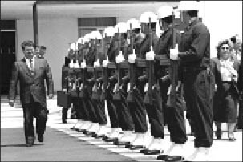

Hesaplanamayan riskler

Hikmet Özdemir Arşivi
Biyografi yazarı [...] ister istemez kültürel, sosyal, psikolojik yapılanmaların halkalarından geçer. Anlattığı insanı bu halkaların belli bir noktasına oturtur. Çevresiyle ve yaşadığı dönemin gerçekliğiyle bağlantısını kurar.
Ne kadar nesnel olmaya çalışırsa çalışsın, bir yaşamla ilgili verileri değerlendirmeye çalışan insan, yaşananları, kendi duygularını katmadan ortaya koyamıyor.
Önemsediğimiz değerlerle örtüşen birini anlatıyorsak, ona sevgi duyuyoruz, saygı duyuyoruz. Aksi durumda ise, bu duyguların tersini yaşamamız kaçınılmaz oluyor.
Aysun Öner, Besnili Bilge: Mehmet Erdemoğlu, (2010)